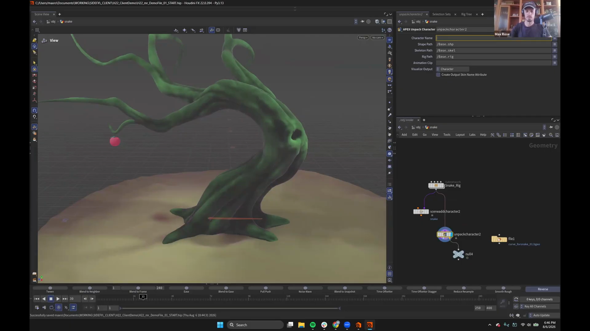
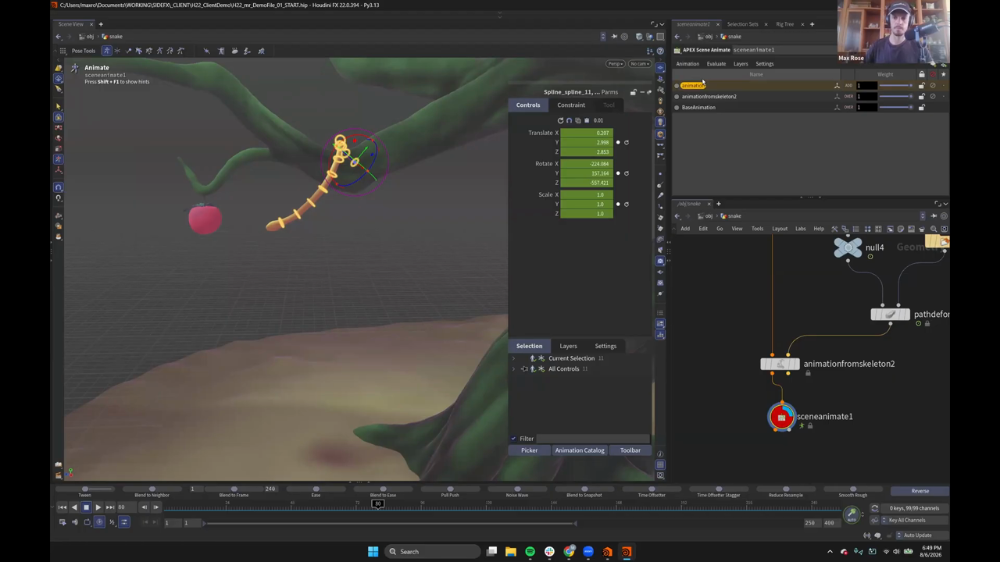

Houdini 22 KineFX アニメーション 8 — Path Deform で蛇に木を登らせる
出典: Animate in KineFX | Part II | Max Rose | Houdini Illume （SideFX 公式ウェビナー / 講師 Max Rose さん / Houdini FX 22.0.394 / 1:01:45 / 英語）の 42:23〜終わりまで。 このページは、上記の動画を見ながら自分用にまとめた日本語の学習メモです。SideFX 公式の翻訳ではありません。 前回はMotion Mixer でモーキャプを合成して書き出すでした。
この記事で扱うこと
シリーズの締めくくりです。プロシージャルな動きと手付けのアニメーションを組み合わせるという、 Houdini ならではの解き方が示されます。
お題はこうです。
蛇に木を登らせたい。ただ登るだけでなく、幹に何度も巻き付きながら登り、 最後は枝の先でリンゴを食べようとしているところで終わってほしい。
使う蛇のリグについて、講師の方は 「この点を示すために急いで作ったもので、正直かなり雑です」と前置きしていました。
1. パスを作る

蛇が通る道を用意します。
Bezier Curveを置きますEnterでステートに入り、Xを押します- これで木のポイントにスナップしながらカーブを引けます
幹に巻き付く軌道を、木そのものの形に沿って描けるわけです。
動画では「料理番組と同じで、あらかじめ作っておいたものがあります」ということで、
curve_forsnake_01.bgeo を File ノードで読み込んでいました。
2. 蛇の骨格を取り出す
Apex Scene Add Characterでシーンに追加し、snakeと名付けますUnpack Characterで骨格を取り出します
ここで講師の方は、シーンへの追加を飛ばしてしまって
「注意深く見ていた方は気づいたと思いますが、また間違えました。蛇をシーンに追加していませんでした」
と戻る場面がありました。Unpack Character の前に
Scene Add Character が要る、という順番の確認になります。
3. Path Deform で骨格をカーブに乗せる
ここが仕掛けの中心です。使うのは Path Deform という、
アニメーション専用ではない普通の SOP です。
| 入力 | 渡すもの |
|---|---|
| 1 | 蛇の骨格 |
| 2 | 作ったカーブ |
これだけで蛇の骨格がカーブに沿って曲がります。あとは進む量にキーを打つだけです。
- フレーム 0 でキー
- フレーム 100 あたりでキーを打ち、カーブに沿って進ませます
ここで一番上まで登り切らせないのがコツです。 少し手前で止めておくことで、アニメーターが手を入れる余地を残します。
そのあと Animation Editor でカーブを整えます。動画ではトゥイーンで詰めて、
着地をやわらげていました。素早く登ってから、ふわりと止まる感じです。
4. APEX に戻す

ここから先は、これまでと同じパターンです。
unpackcharacter2 → null4 → pathdeform → animationfromskeleton2 → sceneanimate1Animation from Skeleton を通すと、骨格の動きがリグのコントロールに乗ります。
そこに Scene Animate を足せば、アニメーターとして作業できる状態になります。
レイヤーが3層になる
上の画像のレイヤーパネルを見ると、下から順にこうなっています。
| レイヤー | 中身 |
|---|---|
BaseAnimation | ベース |
animationfromskeleton2 | プロシージャルに作った登る動き |
animation | 手で足した調整 |
プロシージャルな動きがレイヤーとして扱えるので、 上から手付けを重ねられますし、ブレンドで出し入れもできます。
仕上げは Shift+T です。
（蛇の制御がスプラインなので、回転ではなく移動のキーを打ちます）
最後にリンゴへ向かう頭の動きを付けて完成でした。
5. この手法が示していること
講師の方がこの回で一番伝えたかったのは、手順そのものより考え方のようでした。
技術者の帽子をかぶっていったん Scene Animate の外に出て、 キャラクターをアンパックし、SOP の基本的なオペレータで ジョイント（というよりポイント）を操作する方法を少し覚えるだけで、 できることはほとんど無限に広がります。
そして、外でやったことは Animation from Skeleton で APEX に戻せます。
複雑な問題を、素直な方法で解けるのがこの組み合わせの強みです。
「蛇を木に登らせたい、でも同時にあの複雑なリグにもアクセスしたい」という要求に対して、 Bezier Curve と Path Deform という基本的な道具だけで答えを出しているのが、その実例になっています。
シリーズ全体のまとめ
ウェビナーの最後に、2回分の内容がこう振り返られていました。
- 基本的な操作 — リグを掴んで動かす、慣れ親しんだやり方
- あまり馴染みのないもの — アニメーションステートの中で使える Ragdoll やセカンダリモーション
- モーキャプ — Houdini 22 でリターゲット周りが刷新され、格段に扱いやすくなった
- Motion Mixer — 1つのシーンに複数クリップを持ち、その場で編集し、書き出してリアルタイムエンジンへ
- プロシージャルとの組み合わせ — Houdini の本領。数式で動かしたものを、そのままアニメーションとして扱える
リギングのウェビナーを望む声が多かったそうで、 パート3・4・5 が続く見込みとのことでした。 アセットは SideFX の Content Library から入手できます。
この記事のまとめ
- パスは
Bezier CurveのステートでXを押すと対象にスナップできます Unpack Characterの前にScene Add Characterが必要ですPath Deformに「骨格」と「カーブ」を渡すだけで、骨格がカーブに沿います- 最後まで動かし切らず、アニメーターが手を入れる余地を残します
Animation from Skeletonで APEX に戻せば、プロシージャルな動きがレイヤーになります- その上に手付けのレイヤーを重ね、ブレンドで出し入れできます
- APEX の外に出て SOP でポイントを操作し、また戻す——これが応用の幅を広げます
全8回のメモはこれで終わりです。第1回はリグをノードとして扱うから。